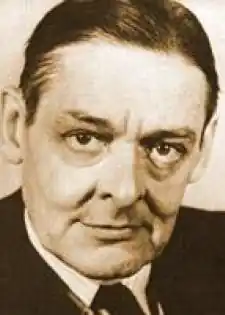
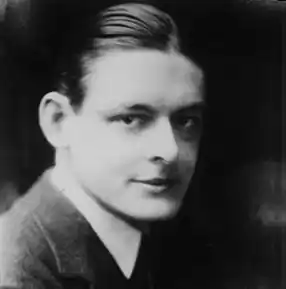

ЕЛІОТ, Томас Стернз (Eliot, Thomas Stearns — 26.09.1888, Сент-Луїс, штат Міссурі — 04.01.1965, Лондон) — англо-американський поет, лауреат Нобелівської премії 1948 р.
Головні проблеми творчості Еліота — трагізм людського існування, духовна криза в умовах антигуманної сучасної цивілізації. Модернізм Еліота визначався його позицією, яка ґрунтувалася на розчаруванні в суспільному прогресі, у моральному потенціалі людства. Поет створив образ "безплідної землі", писав про відчуження людини у здеградованому світі. Глибокий песимізм та іронія, що переростає в сатиру, взаємодіють у його творчості. Прогнозуючи ймовірну загибель європейської культури, Еліот знаходив духовне опертя у християнській релігії та вірі, які можуть стати на заваді відчаю та бездуховності.
Еліот народився у заможній і респектабельній сім'ї, його дитинство та юність минули в США. Майбутнього письменника виховували у пуританському дусі, відтак він здобув досвід суворої самодисципліни і стриманості. Еліот закінчив школу в Сент-Луїсі, у 1906 р. вступив у Гарвардський університет. Захоплення романтичною поезією Дж. Н. Г. Байрона, П. Б. Шеллі та Дж. Кітса, віршами Д. ґ. Россетті та А. Ч. Свінберна, яких він наслідував у своїх юнацьких поетичних опусах, змінилося інтересом до середньовічної літератури. Знайомство з "Божественною комедією" Данте стало однією з найважливіших подій у житті Еліота (1910). У Гарварді Еліот відвідував лекції літературознавця І. Беббіта, котрий справив на нього великий і, значною мірою, вирішальний вплив. Беббіт розвивав ідеї школи "нового гуманізму", заперечував сучасну цивілізацію у будь-яких її формах та виявах (демократія, індустріалізм, романтизм); саме він посіяв у душі Еліота зерно сумніву в цінності романтичної традиції, протиставивши їй класицизм. У студентські роки Еліот, слухаючи курс І. Беббіта про французьку літературну критику, звернувся до книги А. Саймонса "Символізм у літературі", що відкрила перед ним поетичний світ А. Рембо, П. Вердена і Жуля Лафорга, вірші котрого, як згодом зізнавався Еліот, справили на нього особливо сильне враження. У період 1910-1912 pp. були створені і в 1915 р. опубліковані відомі вірші Еліота "Пісня кохання Дж. Альфреда Пруфрока" ("The Love Song of J. Alfred Prufrock"), "Портрет дами" ("Portrait of A Lady"), "Прелюди" ("Preludes"), "Рапсодія вітряної ночі" ("Rhapsody on a Wind Night"). У першому з них іронічно змальовуються претензії жалюгідної людини на щире почуття. Іронічна точка зору розкривається у пародійному використанні мотивів з Данте, В. Шекспіра, Дж. Донна, Р. Браунінга, А. Теннісона. Вірш є потоком свідомості ліричного героя. Альфред Пруфрок усвідомлює, що його переживання сміховинні. Вірш закінчується похмурим висновком про нікчемність мрії і неминучість загибелі: Нас затягне у глибінь зеленуСонм русалок, в буру водорость повитих,Й людський голос збудить,нас, аби втопити.(Пер. О. Гриценка)Глибоким песимізмом забарвлена урбаністична тема "Рапсодії вітряної ночі". Життя міста видається поетові жахливим царством фатальної сили, безумним існуванням. Поезія Еліота стримана, навіть холодна. У його віршах відтворюються позаособистісні почуття людей. На відміну від романтиків, Еліотне вивільняє емоції, а втікає від них, створюючи деперсоналізовану поезію, у якій немає образу індивідуалізованої особистості. У 1914 p. Еліот залишив США. Протягом деякого часу він відвідував лекції у Німеччині, потім у Сорбонні (Франція). У 1915 p. E. прибув у Англію і вступив у Мертон-коледж в Оксфорді, а згодом оселився у Лондоні. Відтак назавжди залишився у Британії. Викладав, виступав як літературний критик і рецензент, брав участь у виданні часопису "Егоїст" ("The Egoist"), а з 1922 по 1939 р. видавав журнал "Крайтеріон" ("The Criterion"). Еліот сприяв літературному становленню молодих поетичних талантів; надавав консультації деяким видавництвам. У 1915 р. він одружився з Вів'єн Хейвуд, але цей шлюб виявився невдалим. З 1930 р. подружжя розпалося. У 1947 р. Вів'єн померла, а у 1957 p. Еліот одружився вдруге — його обраницею стала Валері Флетчер. Рання творчість Еліота розвивалася під впливом естетичної програми неокласицизму та імажизму. Засновником цих течій в Англії був філософ та поет Т.Е. Г'юм, котрий виступив проти романтичного мистецтва. Поети-імажисти, що гуртувалися навколо журналу "Егоїст", — Р. Олдингтон, X. Дулітл, американець Е. Паунд були прибічниками строгого, точного, образного стилю і цілісного ритмічного малюнку вірша. Вони захоплювалися французькою, давньою італійською, китайською і японською поезією. Ідеал строгої системи неокласицизму особливо приваблював Еліота. Він негативно ставився до мистецтва Ренесансу, вважаючи, що воно створило підґрунтя для індивідуалізму. Взірцем поезії для Е. стали англійські "метафізичні поети" XVII ст., і передусім Дж. Донн. У своїх есе "Ендрю Марвелл" (1921) та "Метафізичні поети" (1921) Еліот порівнює французьких символістів з "метафізиками", зауважуючи, що у своїх віршах вони (Е. має на увазі П. Лафорга і Корб'єра) "ближчі до школи Донна, аніж будь-який сучасний англійський поет". Еліот вважає, що й класичні поети (Ж. Расін) володіли здатністю чуттєвого вираження думки, яка так імпонувала йому у "метафізиків". Таким чином, Еліот виокремлює три особливо близькі йому поетичні традиції: метафізичну, класичну і символічну. У своїй поетиці Еліот використовує принцип поєднання різних видів мистецтва — музики, живопису, кінематографу. У деяких поезіях Еліот виразно помітні сатиричні елементи ( "Гіпопотам" — "The Hippopotamus", "Суїні випроставшись" — "Sweeney Erect", "Суїні серед солов'їв" — "Sweeney Among the Nightingales"; усі ці вірші написані у 1920 p.). Європейську славу здобула поема Еліота "Безплідна земля" ("The Waste Land", 1922). її публікація збіглася з виходом у світ джойсового "Улісса" та романів М. Пруста з циклу "У пошуках утраченого часу". Молода літературна генерація сприйняла поему Е. як справжнє одкровення; читачів приголомшувала глибина вираженого у творі "соціального почуття". Проте задум Еліота був дещо іншим: показати не конкретний історичний момент, а передати трагічність самого єства життя, трагедійність буття. У поемі розгортається тема марних зусиль і безглуздих хвилювань людини, які однаково призводять до невблаганної смерті. В асоціативних образах Еліот відтворив свої уявлення про деградацію сучасного суспільства, про його занепад і мертвотну сутність. У першій частині поеми ("Поховання померлого") з'являється тема смерті; її пророкує ясновидиця Созостріс: "Я покажу тобі сам жах у жмені пороху". У другій частині ("Гра в шахи") звучить думка про те, що життя схоже на гру — пересування фігур, зміну ситуацій. Тут також йдеться про смерть. У третій частині ("Вогненна проповідь") чути "кісток глухе торохтіння й хихотіння, як погрозу". Сліпий віщун Тіресій розказує про чоловіків та жінок, які не зазнали кохання. У п'ятій частині ("Що нагримів грім") поет акцентує тему загибелі всього живого. У безводній скелястій пустелі гримить грім, але немає дощу. Люди скуті страхом, наче кайданами. Поема завершується мотивом безумства і тричі повтореним санскритським словом "schantih" ("мир, вищий за всяке розуміння"). Поемі притаманний міфологізм. Автор використовує міфи про святий Грааль, про Адоніса та Озіріса. Звернення до міфу пов'язане з прагненням створити універсалію буття. Провідними стають образи безплідної землі і долини кісток. Вірші Еліота іронічні та похмурі. Вони вирізняються ускладненістю та фрагментарністю форми. Поема побудована на асоціативному зв'язку різних образів, мотивів, сцен. У поетичну систему включені штрихи з "Пекла" Данте, "Бурі" Шекспіра. Трапляються фрази різними мовами. Тема деградації та загибелі людини перебуває у центрі поеми "Порожні люди"{"The Hollow Men", 1925): "Ми видовбані люди / Ми солом'яні незграби / Разом хитаємось / Голови наповнює нам солома / Наша мова не значить нічого / Коли шепотом озиваємось до себе / Наш голос як шелест сухої трави/ Яку наскрізь продмухує вітер / Як скрегіт лапи пацюка / На розбитому склі / В сухій нашій пивниці" (пер. Ф. Неуважного). Поема закінчується пророцтвом про кінець світу, проте автор зумисно змальовує апокаліптичні мотиви без трагізму: І саме так кінчається світНе гуком великим тільки скиглінням.Зміст деяких творів Е. перегукується з характерними явищами сучасності. У вірші "Коріолан" (1932), написаному за мотивами шекспірівської трагедії і бетховенівської увертюри до "Коріолана", створений сатиричний образ мілітариста, фашистського диктатора. У поемі "Чотири квартети" ("Four Quartets", 1943) втілений релігійно-філософський погляд на світ, на життя і вічність. Композиція поеми ґрунтується на уявленні про єдність чотирьох стихій — повітря, землі, води і вогню, чотирьох пір року та чотирьох стадій людського життя. Відтак існування прирівнюється до смерті. Вмирання означає для поета прилучення до божественного розуму. У 1930-х pp. Еліот працював у жанрі віршованої драми: "Скеля" ("The Rock", 1934), "Убивство в катедрі" ("Murder in the Cathedral", 1935), "Родинне свято" ("The Family Reunion", 1939).Еліотвиступав також і в ролі літературного критика, аналізуючи важливі теоретико-методологічні проблеми, серед яких його особливо цікавили проблема традиції, питання про співвідношення творчої індивідуальності й традиції. Еліот теоретично обґрунтовував формалізм у літературній критиці. Одним з головних принципів Еліота була відмова від розгляду художнього твору в контексті особистості письменника, його біографії. На думку Еліота, твір існує незалежно від автора, він автономний і виступає самостійною вартістю. Це данність, замкнута у самій собі. Концепція Еліота стала наріжним каменем теорії англо-американської "нової критики", послідовники якої відмовляються від соціально-історичної інтерпретації твору, наполягаючи на його іманентній сутності. Головні літературно-критичні збірки Еліота: "Священний ліс" ("The Sacred Wood", 1920), "Користь поезії і користь критики" ("The Use of Poetry and the Use of Criticism", 1933), "Про поезію і поетів" ("On Poetry and Poets", 1957). Еліот розрізняв декілька типів критики — професійну, академічну і критику як різновид мистецтва. Себе він уважав критиком-поетом, як, скажімо, і С.Т. Колріджата М. Арнольда. Слід зауважити, що як критик Еліот набагато глибший від "неокритиків" та формалістів, його міркування, позначені інтелектуальною проникливістю, й досі не втрачають своєї актуальності, а цінність багатьох думок та спостережень Еліота ще треба належно усвідомити. Українською мовою поезію Еліота перекладали Г. Кочур, Д. Павличко, І. Драч, В. Коротич, О. Мокровольський, О. Гриценко, Ф. Неуважний, Ю. Лісняк, М. Стріха, М. Габлевич, В. Діброва, О. Тарнавський та ін.